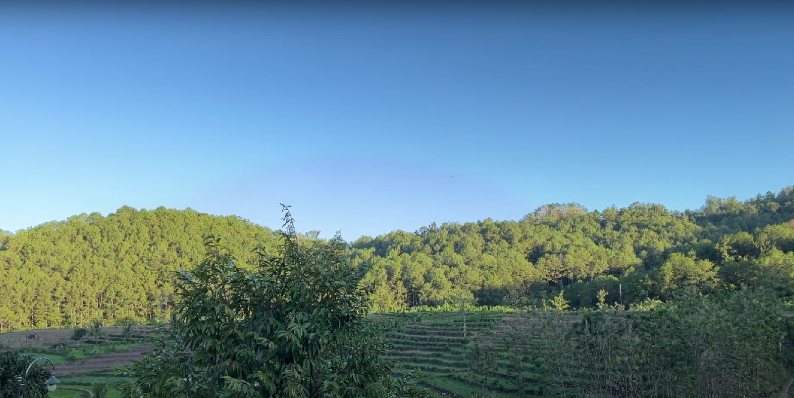

<!-- Carousel ke 2 -->
<div class="container-fluid">
  <div id="carouselIndicators" class="carousel slide" data-ride="carousel">
    <ol class="carousel-indicators">
      <li
        data-target="#carouselIndicators"
        data-slide-to="0"
        class="active"
      ></li>
      <li data-target="#carouselIndicators" data-slide-to="1"></li>
      <li data-target="#carouselIndicators" data-slide-to="2"></li>
    </ol>
    <div class="carousel-inner">
      <div class="carousel-item active">
        
        <div class="carousel-caption">
          <h2>Website Puloharjo</h2>
          <p>
            Website ini berisi informasi mengenai profile kelurahan serta
            informasi layanan dan kependudukan
          </p>
        </div>
      </div>
      <div class="carousel-item">
        
      </div>
      <div class="carousel-item">
        
      </div>
    </div>
    <!-- <a
        class="carousel-control-prev"
        href="#carouselIndicators"
        role="button"
        data-slide="prev"
      >
        <span class="carousel-control-prev-icon" aria-hidden="true"></span>
      </a>
      <a
        class="carousel-control-next"
        href="#carouselIndicators"
        role="button"
        data-slide="next"
      >
        <span class="carousel-control-next-icon" aria-hidden="true"></span>
      </a> -->
    <a
      class="carousel-control-prev"
      href="#carouselIndicators"
      role="button"
      data-slide="prev"
    >
      <span class="carousel-control-prev-icon" aria-hidden="true"></span>
      <span class="sr-only">Previous</span>
    </a>
    <a
      class="carousel-control-next"
      href="#carouselIndicators"
      role="button"
      data-slide="next"
    >
      <span class="carousel-control-next-icon" aria-hidden="true"></span>
      <span class="sr-only">Next</span>
    </a>
  </div>
</div>
